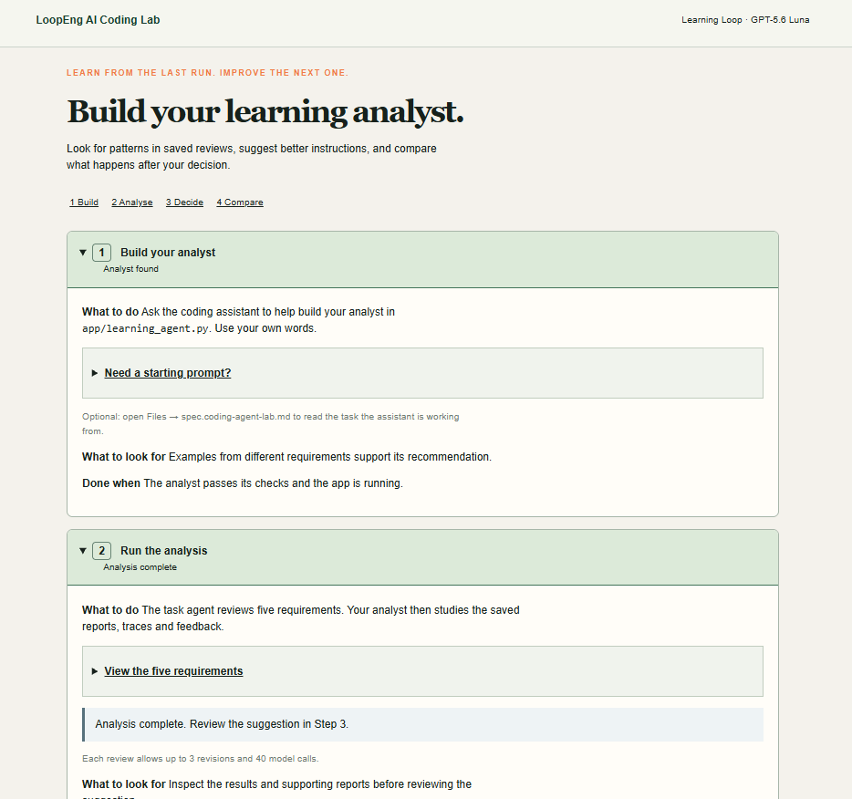

How it works
Four steps
- 1
Build
Write the analyst in
app/learning_agent.pywith a coding assistant. - 2
Analyse
The task agent reviews five requirements, then the analyst looks for patterns across its reports.
- 3
Decide
Check the evidence behind the suggested instruction change, then accept it or keep the original.
- 4
Compare
The app re-runs the reviews and compares the results against the baseline.
App preview
The app

Inputs
The five requirements
Each one is deliberately vague. The agent has to separate confirmed facts from ambiguities instead of inventing answers.
Avatar Upload
- Users can upload one avatar image to their profile.
- An uploaded image must be smaller than 2 MB.
- Images must be stored securely.
- Accept all common image formats.
- Replacing an avatar should be easy.
Password Reset
- Users can request a password-reset link by email.
- A reset link can be used only once.
- Links must expire after a reasonable time.
- The existing password remains valid until the reset succeeds.
- Handle repeated requests appropriately.
Notifications
- Send notifications by email and in the app.
- Users can disable ordinary email notifications.
- Urgent notifications must arrive quickly.
- Group related notifications sensibly.
- Retain unread in-app notifications for 30 days.
Team Invitations
- Workspace owners can invite someone to join their workspace by email.
- Accepting an invitation adds the person to the workspace as a member.
- An invitation link can be accepted only once and expires after seven days.
- Owners can cancel a pending invitation.
- Show owners which invitations are still waiting for a response.
- Handle invitations to existing members and repeated invitations appropriately.
Report Export
- Users can download the records shown in a report as a CSV file.
- The export must respect the user’s current filters and access permissions.
- Include a header row with the column names.
- Large exports should run in the background so the user can continue working.
- Notify the user when the file is ready.
- Download links should remain available for a reasonable time.
- If an export fails, explain what happened and let the user try again.
Baseline
How the original instructions scored
Each of the five first-draft reports is checked on three criteria, for 15 checks in total.
Overall
12 / 15
Completeness
5 / 5
All clauses covered in five ordered sections.
Clarity
3 / 5
Questions name the clause and ask for a concrete decision.
Depth
4 / 5
No invented facts; each ambiguity has a concrete failure scenario.
Clarity is the weakest criterion, so the analyst should focus there. Keeping the original instructions is still a valid decision when the evidence for a recurring pattern is weak.
Run it yourself
Running it locally
You need Python 3.11+ and an OpenAI-compatible API key in a local .env file.
git clone https://github.com/WildCat9982/learning-analyst-LoopEng.git
cd learning-analyst-LoopEng
python -m venv .venv
.venv/bin/pip install -r requirements.txt # Windows: .venv\Scripts\pip
.venv/bin/python scripts/server.py start # http://localhost:4000Built with Flask, LangGraph and deepagents. Run the tests with .venv/bin/python -m pytest -q tests/.